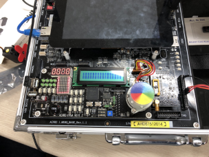
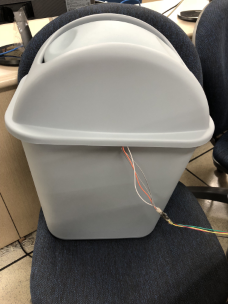
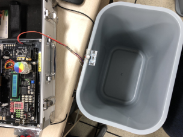
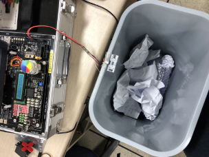
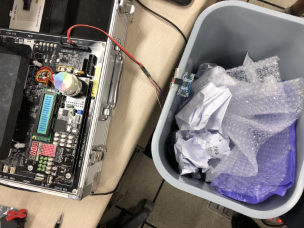
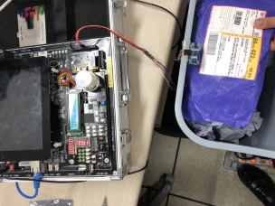

Capacity detection trash can
Intro
| Develop Period |
2018.04 ~ 2018.05
|
|
|
∎ Before the trash can is full, let it be known in advance to make it easier to manage.
|
|
|
∎ how much of the trash can is left
∎ With lcd and dot-ded, capacity can be checked visually.
|
|
|
∎ Hardware
- Device Driver (ACHRO-FPGA) - Ultrasonic sensors
∎ Software
- OS : Linux (Ubuntu), Windows10 - Language : C language - Program : Vim, Visual Studio, VMware |
|
|
∎ The capacity of the trash can has been indicated on the dings and, when trash can is full, on the dings with the device's notification.
|
Result
|  |  |
| Device Drivers in initial state | Completed view of trash can |
|  |  |
| the state of the trash can when it is empty | the state of the garbage can when it is 60% full |
|  |  |
| the state of the garbage can when it is 90% full | the state of the garbage can when it is 100% full |